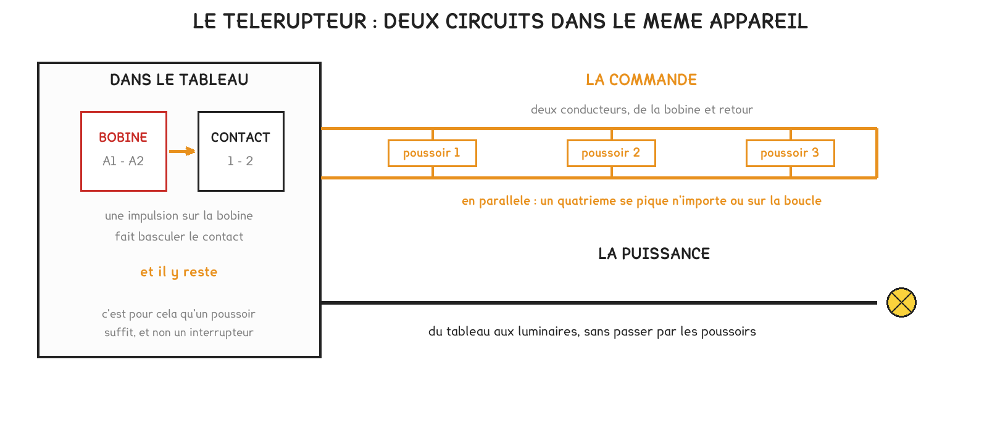
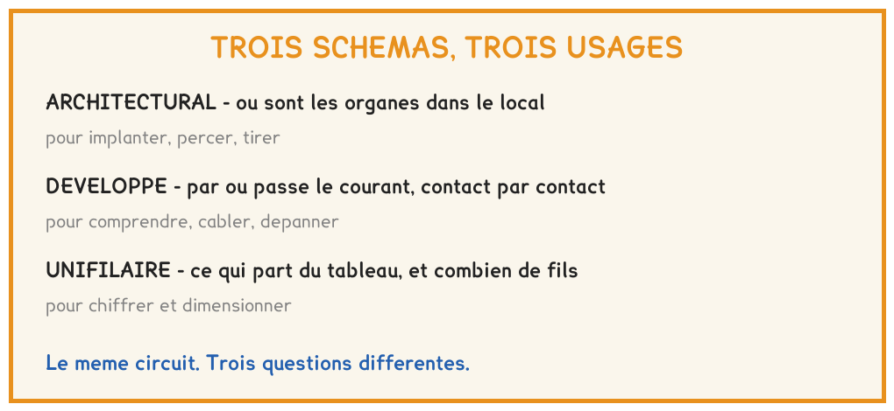

BTS FED option C · 1re année
Câblerla référence 230 V
Vous avez câblé ce que le bus remplacera : un va-et-vient, puis un télérupteur et sa boucle de poussoirs. Le temps mis pour ajouter un quatrième point de commande est le seul argument qui convaincra un client, et c'est vous qui l'avez chronométré.
6 questions · 4 exercices · 3 replis · 4 figures
Savoirs travaillés
Objectifs de la séance
Le poste : une platine, une source protégée par un différentiel 30 mA et un luminaire. Vous y avez câblé deux fois la même fonction, allumer depuis deux endroits : d’abord en va-et-vient, puis au télérupteur avec trois poussoirs. Entre les deux, un contrôle en continuité et un essai des quatre combinaisons. Pour finir, un quatrième poussoir, chronomètre en main.
Ce n’est pas une révision du baccalauréat professionnel. Cette installation est la référence à laquelle sera comparé tout le travail de l’année, et les deux durées chronométrées serviront de nouveau en semaine 4, puis en semaine 11.

Trois schémas, trois questions
| Le schéma | Ce qu’il dit | Pour quoi faire |
|---|---|---|
| Architectural | où sont les organes dans le local | implanter, percer, tirer |
| Développé | par où passe le courant, contact par contact | comprendre, câbler, dépanner |
| Unifilaire | ce qui part du tableau, et combien de conducteurs | chiffrer, commander |
Un même circuit se dessine de trois façons, et chacune répond à une question. Sur l’architectural et l’unifilaire, un seul trait par liaison : les barres obliques disent le nombre de conducteurs.
Trois conducteurs entre le tableau et le premier interrupteur, par réflexe « phase, neutre, terre ». Le neutre et la terre ne montent pas à l’interrupteur : ils vont du tableau au luminaire, et le schéma architectural ne les dessine pas.
Pour aller plus loin
Ce que le développé montre, et que l'architectural ne peut pas montrerPour aller plus loin›
Le schéma développé nomme les bornes : la borne commune d’un va-et-vient, les deux bornes des navettes. C’est sur lui qu’on suit le chemin du courant, lampe allumée, d’un contact au suivant.
Le schéma architectural représente des liaisons entre des organes posés sur un plan. Il ne dit ni quel conducteur arrive sur quelle borne, ni par où passe le courant. Ce n’est pas un défaut : chaque schéma a sa question.
Avant de mettre sous tension
Une fois le câblage terminé, on ne met pas sous tension pour voir. Le contrôle se fait au multimètre, en continuité, hors tension, et il se prépare : on écrit ce que chaque mesure doit donner avant de la faire.
- Consigner : identifier, séparer, condamner, vérifier l’appareil, vérifier l’absence de tension.
- Câbler d’après le schéma développé, en nommant chaque borne.
- Écrire le tableau de contrôle : continuité ou coupure attendue, pour chaque paire de points et chaque position des interrupteurs.
- Mesurer en continuité, hors tension, et comparer à ce qui était attendu.
- Mettre sous tension seulement si tout est conforme, puis essayer les quatre combinaisons.
| Entre | Interrupteurs dans la même position | Interrupteurs dans des positions opposées |
|---|---|---|
| Phase et retour lampe | ||
| Retour lampe et neutre | ||
| Phase et terre |
| Interrupteur 1 | Interrupteur 2 | Lampe attendue | Lampe obtenue |
|---|---|---|---|
| position A | position A | ||
| position A | position B | ||
| position B | position A | ||
| position B | position B |
Mettre sous tension pour voir n’est pas un essai, c’est un pari. Et quand une combinaison ne donne pas ce qui était attendu, on dit quel conducteur est en cause avant de démonter : c’est ainsi qu’on apprend à diagnostiquer.
Le télérupteur, et le quatrième point

Le télérupteur déporte la commutation au tableau : une impulsion sur la bobine fait basculer le contact, qui y reste. C’est pourquoi un poussoir suffit, et pourquoi un quatrième se pique n’importe où sur la boucle, en parallèle.
« Commande » ne veut pas dire « très basse tension ». La boucle de poussoirs d’un télérupteur ordinaire est en 230 V, et c’est votre mesure qui le dit. Les fils qui montent aux poussoirs se traitent comme les autres.
| Lampe allumée | Lampe éteinte | |
|---|---|---|
| Tension aux bornes de la bobine, au repos | ||
| Tension entre les deux fils de la boucle de poussoirs | ||
| Courant dans le circuit de puissance |
| Durée | |
|---|---|
| Ajouter un 4e poussoir au télérupteur | |
| Ajouter un 3e point au va-et-vient, estimé |
Pour aller plus loin
Télérupteur ou contacteur ?Pour aller plus loin›
Un contacteur reste enclenché tant que sa bobine est alimentée : relâcher la commande le fait retomber. Un télérupteur reçoit une impulsion, bascule mécaniquement et reste dans sa position sans être alimenté ; l’impulsion suivante le fait rebasculer.
C’est ce qui explique qu’un poussoir suffit là où un contacteur demanderait un interrupteur maintenu. Il existe des télérupteurs à bobine 24 V, dont la boucle est alors en TBTS ; ils coûtent plus cher, précisément pour cela.
Ce que vaut la comparaisonPour aller plus loin›
Le télérupteur coûte plus cher que deux va-et-vient, et sur ce poste il consomme davantage de cuivre. Ce que le client achète n’est pas du cuivre : c’est la possibilité d’ajouter plus tard, sur la boucle, sans rouvrir un mur.
Les deux durées chronométrées aujourd’hui sont la mesure de cette différence. Elles seront reprises en semaine 4, puis en semaine 11, quand le bus permettra la même chose sans tirer un fil.

Vérifier que c’est acquis
- Pour savoir où percer la saignée d’un interrupteur, on lit : le schéma architectural | le schéma développé | le schéma unifilaire
- Le nombre de conducteurs d’une liaison se lit : dans les barres obliques | dans l’épaisseur du trait | dans la nomenclature
- Un câblage terminé se contrôle : en continuité, hors tension | sous tension, lampe en place | à la pince, en service
- Sur un télérupteur ordinaire, la boucle de poussoirs est en : 230 V alternatif | 30 V continu | 24 V alternatif
- Un quatrième poussoir sur un télérupteur se raccorde : en parallèle sur la boucle | en série dans la boucle | sur le contact de puissance
- Avec un télérupteur, la puissance est commutée : au tableau | dans le local | au poussoir
S’entraîner
Exercice · C1-1
Le cuivre de la boucle
Une boucle de poussoirs part du tableau et dessert trois poussoirs le long d’un couloir : 12 m du tableau au premier, puis 6 m, puis 9 m jusqu’au troisième, et 7 m de plus pour un quatrième ajouté en bout.
Quelle longueur de conducteur faut-il en tout, sachant que la boucle compte deux conducteurs ?
Exercice · C1-1
Le courant du circuit de puissance
Le télérupteur d’un poste commute un luminaire de 72 W sous 230 V.
Quel courant traverse le contact de puissance, lampe allumée ?
Exercice · C1-1
Quel schéma pour chiffrer ?
Vous devez commander le câble d’un départ d’éclairage : combien de conducteurs, et de quelle section.
Quel schéma ouvrez-vous ?
Exercice · B8-1
Coupure des deux côtés
Dans le tableau de contrôle, une seule ligne doit valoir coupure dans les deux colonnes, quelle que soit la position des interrupteurs. Dire laquelle et expliquer, en trois lignes, pourquoi une continuité à cet endroit interdit toute mise sous tension.
- J’ai nommé la paire de points concernée
- J’ai dit ce que signifierait une continuité entre ces deux points
- J’ai dit ce qui se passerait à la mise sous tension
- J’ai précisé que cela vaut dans toutes les positions des interrupteurs
À retenir pour la prochaine séance
La séance B3 relève une platine sans rien démonter : nommer huit organes par leur plaque, ranger chacun dans sa famille, tracer les deux chaînes. Le télérupteur câblé aujourd’hui y figure, à côté d’un actionneur bus : à vous de dire ce que les deux ont en commun, et ce qui les distingue.
Cette page rappelle la séance. Elle ne remplace pas le polycopié et ne donne aucun corrigé. Tous les calculs se font dans votre navigateur ; rien n'est enregistré.